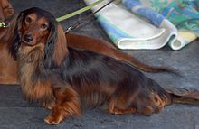
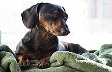
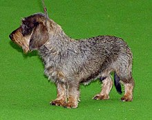
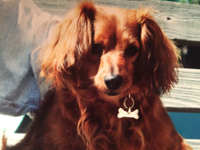

Dachshund Lover

Tipos
Según su tamaño existen 3 variedades de Dachshund: Mediano, Pequeño y Toy. En cuanto al pelaje del "perro salchicha", existen 3 clases en función a la longitud de su pelo:
- De pelo corto: presenta un pelaje abundante,suave,espeso,brillante y liso.
- De pelo duro o de alambre: la textura del manto es áspera,con pelos mas suaves y cortos intercalados.
- De pelo largo: con un pelaje probisto de una capa externa de pelo brillante,liso y pegado al cuerpo.

Estandar de pelo largo.

Mini con marcas atigradas.

Pelo duro.

Mini pelirrojo.